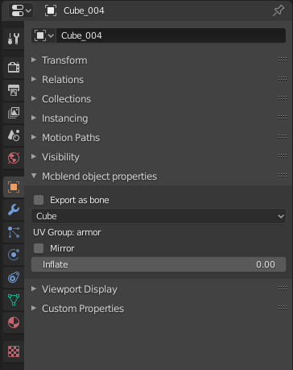

GUI Changes
Mcblend adds new panels to Blender GUI:
- Mcblend tab on sidebar,
- Mcblend UV groups tab in the Scene Properties,
- Mcblend events tab in the Scene Properties,
- Mcblend object properties in the Object Properties,
- Mcblend: Export model and Mcblend: Export animation in the export menu,
- Mcblend: Import model in the import menu.
Sidebar
The sidebar gives access to most of the Mcblend functionality. It contains 5 panels:

Scene properties
Scene properties tab has two new panels:
- Mcblend UV groups - used for creating and customizing UV-groups.
- Mcblend events - used for adding events for creating sound- and particle-effects animations.

Object properties
Object properties tab has new panel - Mcblend object properties. It lets you view and edit custom object properties used by Mcblend.

Note
Editing the Inflate value through this panel does not change the dimensions of the object, but it does change the inflate value in the exported object. If you want to inflate/deflate the object you should use the inflate operator from the sidebar.